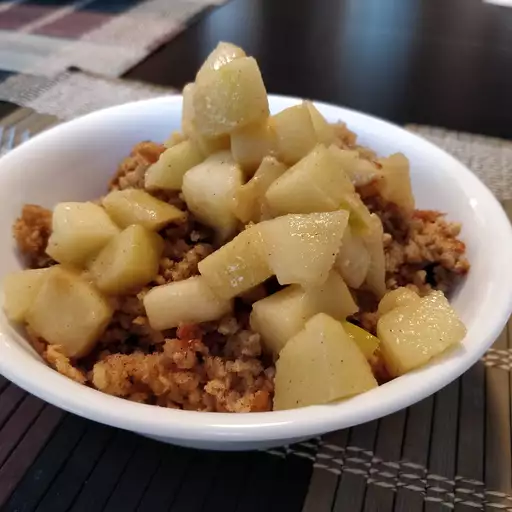

Oatmeal

Description
Healthy meal that will keep you full for a long time
Ingredients
- ½ cup vegetable oil
- ¾ cup white sugar
- 2 eggs
- 1 cup milk
- 3 cups quick cooking oats
Steps
- Beat together oil and sugar. Mix in eggs, milk, salt, baking powder, oatmeal. Beat well then stir in raisins. Pour into a lightly grease pie pan. Sprinkle with brown sugar and cinnamon. Refrigerate overnight.
- The next morning, preheat oven to 350 degrees F (175 degrees C).
- Bake in preheated oven until firm, about 35 minutes. Serve hot.